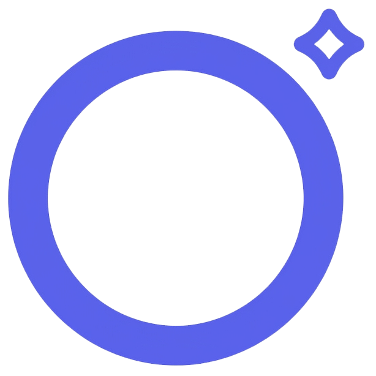

Hands-Free Learning Forge
Camera-based head tracking. Runs locally; nothing leaves your machine.
Hover duration before a dwell-click fires.
Single open = click. Double open (within 0.4s) = open the Orbital Command Menu at your gaze.
Trigger the Orbital Menu by nodding (chin down + back up), double-blinking, pressing Alt+O on the page, or:
Run cd server && npm install && npm start and copy server/.env.example to server/.env with your keys.
Claude uses claude-haiku-4-5 on the server; Veo uses the default preview model.